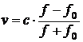
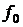

Впишите правильный ответ.
Локатор батискафа, равномерно погружающегося вертикально вниз, испускает ультразвуковые импульсы частотой 185 МГц. Скорость погружения батискафа (в м/с) вычисляется по формуле  
где скорость звука в воде,